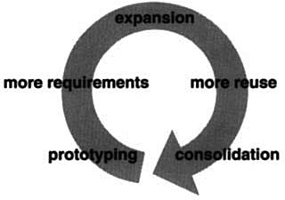

It’s possible to argue that this book hasn’t accomplished much. After all, it doesn’t present any algorithms or programming techniques that haven’t been used before. It doesn’t give a rigorous method for designing systems, nor does it develop a new theory of design—it just documents existing designs. You could conclude that it makes a reasonable tutorial, perhaps, but it certainly can’t offer much to an experienced object-oriented designer.
We hope you think differently. Cataloging design patterns is important. It gives us standard names and definitions for the techniques we use. If we don’t study design patterns in software, we won’t be able to improve them, and it’ll be harder to come up with new ones.
This book is only a start. It contains some of the most common design patterns that expert object-oriented designers use, and yet people hear and learn about them solely by word of mouth or by studying existing systems. Early drafts of the book prompted other people to write down the design patterns they use, and it should prompt even more in its current form. We hope this will mark the start of a movement to document the expertise of software practitioners.
This chapter discusses the impact we think design patterns will have, how they are related to other work in design, and how you can get involved in finding and cataloging patterns.
Here are several ways in which the design patterns in this book can affect the way you design object-oriented software, based on our day-to-day experience with them.
Studies of expert programmers for conventional languages have shown that knowledge and experience isn’t organized simply around syntax but in larger conceptual structures such as algorithms, data structures and idioms [AS85, Cop92, Cur89, SS86], and plans for fulfilling a particular goal [SE84]. Designers probably don’t think about the notation they’re using for recording the design as much as they try to match the current design situation against plans, algorithms, data structures, and idioms they have learned in the past.
Computer scientists name and catalog algorithms and data structures, but we don’t often name other kinds of patterns. Design patterns provide a common vocabulary for designers to use to communicate, document, and explore design alternatives. Design patterns make a system seem less complex by letting you talk about it at a higher level of abstraction than that of a design notation or programming language. Design patterns raise the level at which you design and discuss design with your colleagues.
Once you’ve absorbed the design patterns in this book, your design vocabulary will almost certainly change. You will speak directly in terms of the names of the design patterns. You’ll find yourself saying things like, “Let’s use an Observer here,” or, “Let’s make a Strategy out of these classes.”
Knowing the design patterns in this book makes it easier to understand existing systems. Most large object-oriented systems use these design patterns. People learning object-oriented programming often complain that the systems they’re working with use inheritance in convoluted ways and that it’s difficult to follow the flow of control. In large part this is because they do not understand the design patterns in the system. Learning these design patterns will help you understand existing object-oriented systems.
These design patterns can also make you a better designer. They provide solutions to common problems. If you work with object-oriented systems long enough, you’ll probably learn these design patterns on your own. But reading the book will help you learn them much faster. Learning these patterns will help a novice act more like an expert.
Moreover, describing a system in terms of the design patterns that it uses will make it a lot easier to understand. Otherwise, people will have to reverse-engineer the design to unearth the patterns it uses. Having a common vocabulary means you don’t have to describe the whole design pattern; you can just name it and expect your reader to know it. A reader who doesn’t know the patterns will have to look them up at first, but that’s still easier than reverse-engineering.
We use these patterns in our own designs, and we’ve found them invaluable. Yet we use the patterns in arguably naive ways. We use them to pick names for classes, to think about and teach good design, and to describe designs in terms of the sequence of design patterns we applied [BJ94]. It’s easy to imagine more sophisticated ways of using patterns, such as pattern-based CASE tools or hypertext documents. But patterns are a big help even without sophisticated tools.
Object-oriented design methods are supposed to promote good design, to teach new designers how to design well, and to standardize the way designs are developed. A design method typically defines a set of notations (usually graphical) for modeling various aspects of a design, along with a set of rules that govern how and when to use each notation. Design methods usually describe problems that occur in a design, how to resolve them, and how to evaluate design. But they haven’t been able to capture the experience of expert designers.
We believe our design patterns are an important piece that’s been missing from object-oriented design methods. The design patterns show how to use primitive techniques such as objects, inheritance, and polymorphism. They show how to parameterize a system with an algorithm, a behavior, a state, or the kind of objects it’s supposed to create. Design patterns provide a way to describe more of the “why” of a design and not just record the results of your decisions. The Applicability, Consequences, and Implementation sections of the design patterns help guide you in the decisions you have to make.
Design patterns are especially useful in turning an analysis model into an implementation model. Despite many claims that promise a smooth transition from object-oriented analysis to design, in practice the transition is anything but smooth. A flexible and reusable design will contain objects that aren’t in the analysis model. The programming language and class libraries you use affect the design. Analysis models often must be redesigned to make them reusable. Many of the design patterns in the catalog address these issues, which is why we call them design patterns.
A full-fledged design method requires more kinds of patterns than just design patterns. There can also be analysis patterns, user interface design patterns, or performance-tuning patterns. But the design patterns are an essential part, one that’s been missing until now.
One of the problems in developing reusable software is that it often has to be reorganized or refactored [OJ90]. Design patterns help you determine how to reorganize a design, and they can reduce the amount of refactoring you need to do later.
The lifecycle of object-oriented software has several phases. Brian Foote identifies these phases as the prototyping, expansionary, and consolidating phases [Foo92].
The prototyping phase is a flurry of activity as the software is brought to life through rapid prototyping and incremental changes, until it meets an initial set of requirements and reaches adolescence. At this point, the software usually consists of class hierarchies that closely reflect entities in the initial problem domain. The main kind of reuse is white-box reuse by inheritance.
Once the software has reached adolescence and is put into service, its evolution is governed by two conflicting needs: (1) the software must satisfy more requirements, and (2) the software must be more reusable. New requirements usually add new classes and operations and perhaps whole class hierarchies. The software goes through an expansionary phase to meet new requirements. This can’t continue for long, however. Eventually the software will become too inflexible and arthritic for further change. The class hierarchies will no longer match any problem domain. Instead they’ll reflect many problem domains, and classes will define many unrelated operations and instance variables.
To continue to evolve, the software must be reorganized in a process known as refactoring. This is the phase in which frameworks often emerge. Refactoring involves tearing apart classes into special- and general-purpose components, moving operations up or down the class hierarchy, and rationalizing the interfaces of classes. This consolidation phase produces many new kinds of objects, often by decomposing existing objects and using object composition instead of inheritance. Hence black-box reuse replaces white-box reuse. The continual need to satisfy more requirements along with the need for more reuse propels object-oriented software through repeated phases of expansion and consolidation—expansion as new requirements are satisfied, and consolidation as the software becomes more general.

This cycle is unavoidable. But good designers are aware of the changes that can prompt refactorings. Good designers also know class and object structures that can help avoid refactorings—their designs are robust in the face of requirement changes. A thorough requirements analysis will highlight those requirements that are likely to change during the life of the software, and a good design will be robust to them.
Our design patterns capture many of the structures that result from refactoring. Using these patterns early in the life of a design prevents later refactorings. But even if you don’t see how to apply a pattern until after you’ve built your system, the pattern can still show you how to change it. Design patterns thus provide targets for your refactorings.
The catalog began as a part of Erich’s Ph.D. thesis [Gam91, Gam92]. Roughly half of the current patterns were in his thesis. By OOPSLA ’91 it was officially an independent catalog, and Richard had joined Erich to work on it. John started working on it soon thereafter. By OOPSLA ’92, Ralph had joined the group. We worked hard to make the catalog fit for publication at ECOOP ’93, but soon we realized that a 90-page paper was not going to be accepted. So we summarized the catalog and submitted the summary, which was accepted. We decided to turn the catalog into a book shortly thereafter.
Our names for the patterns have changed a little along the way. “Wrapper” became “Decorator,” “Glue” became “Facade,” “Solitaire” became “Singleton,” and “Walker” became “Visitor.” A couple of patterns got dropped because they didn’t seem important enough. But otherwise the set of patterns in the catalog has changed little since the end of 1992. The patterns themselves, however, have evolved tremendously.
In fact, noticing that something is a pattern is the easy part. All four of us are actively working on building object-oriented systems, and we’ve found that it’s easy to spot patterns when you look at enough systems. But finding patterns is much easier than describing them.
If you build systems and then reflect on what you build, you will see patterns in what you do. But it’s hard to describe patterns so that people who don’t know them will understand them and realize why they are important. Experts immediately recognized the value of the catalog in its early stages. But the only ones who could understand the patterns were those who had already used them.
Since one of the main purposes of the book was to teach object-oriented design to new designers, we knew we had to improve the catalog. We expanded the average size of a pattern from less than 2 to more than 10 pages by including a detailed motivating example and sample code. We also started examining the trade-offs and the various ways of implementing the pattern. This made the patterns easier to learn.
Another important change over the past year has been a greater emphasis on the problem that a pattern solves. It’s easiest to see a pattern as a solution, as a technique that can be adapted and reused. It’s harder to see when it is appropriate—to characterize the problems it solves and the context in which it’s the best solution. In general, it’s easier to see what someone is doing than to know why, and the “why” for a pattern is the problem it solves. Knowing the purpose of a pattern is important too, because it helps us choose patterns to apply. It also helps us understand the design of existing systems. A pattern author must determine and characterize the problem that the pattern solves, even if you have to do it after you’ve discovered its solution.
We aren’t the only ones interested in writing books that catalog the patterns experts use. We are a part of a larger community interested in patterns in general and software-related patterns in particular. Christopher Alexander is the architect who first studied patterns in buildings and communities and developed a “pattern language” for generating them. His work has inspired us time and again. So it’s fitting and worthwhile to compare our work to his. Then we’ll look at others’ work in software-related patterns.
There are many ways in which our work is like Alexander’s. Both are based on observing existing systems and looking for patterns in them. Both have templates for describing patterns (although our templates are quite different). Both rely on natural language and lots of examples to describe patterns rather than formal languages, and both give rationales for each pattern.
But there are just as many ways in which our works are different:
1. People have been making buildings for thousands of years, and there are many classic examples to draw upon. We have been making software systems for a relatively short time, and few are considered classics.
2. Alexander gives an order in which his patterns should be used; we have not.
3. Alexander’s patterns emphasize the problems they address, whereas design patterns describe the solutions in more detail.
4. Alexander claims his patterns will generate complete buildings. We do not claim that our patterns will generate complete programs.
When Alexander claims you can design a house simply by applying his patterns one after another, he has goals similar to those of object-oriented design methodologists who give step-by-step rules for design. Alexander doesn’t deny the need for creativity; some of his patterns require understanding the living habits of the people who will use the building, and his belief in the “poetry” of design implies a level of expertise beyond the pattern language itself.1 But his description of how patterns generate designs implies that a pattern language can make the design process deterministic and repeatable.
The Alexandrian point of view has helped us focus on design trade-offs—the different “forces” that help shape a design. His influence made us work harder to understand the applicability and consequences of our patterns. It also kept us from worrying about defining a formal representation of patterns. Although such a representation might make automating patterns possible, at this stage it’s more important to explore the space of design patterns than to formalize it.
From Alexander’s point of view, the patterns in this book do not form a pattern language. Given the variety of software systems that people build, it’s hard to see how we could provide a “complete” set of patterns, one that offers step-by-step instructions for designing an application. We can do that for certain classes of applications, such as report-writing or making a forms-entry system. But our catalog is just a collection of related patterns; we can’t pretend it’s a pattern language.
In fact, we think it’s unlikely that there will ever be a complete pattern language for software. But it’s certainly possible to make one that is more complete. Additions would have to include frameworks and how to use them [Joh92], patterns for user interface design [BJ94], analysis patterns [Coa92], and all the other aspects of developing software. Design patterns are just a part of a larger pattern language for software.
Our first collective experience in the study of software architecture was at an OOPSLA ’91 workshop led by Bruce Anderson. The workshop was dedicated to developing a handbook for software architects. (Judging from this book, we suspect “architecture encyclopedia” will be a more appropriate name than “architecture handbook.”) That first workshop has led to a series of meetings, the most recent of which being the first conference on Pattern Languages of Programs held in August 1994. This has created a community of people interested in documenting software expertise.
Of course, others have had this goal as well. Donald Knuth’s The Art of Computer Programming [Knu73] was one of the first attempts to catalog software knowledge, though he focused on describing algorithms. Even so, the task proved too great to finish. The Graphics Gems series [Gla90, Arv91, Kir92] is another catalog of design knowledge, though it too tends to focus on algorithms. The Domain Specific Software Architecture program sponsored by the U.S. Department of Defense [GM92] concentrates on gathering architectural information. The knowledge-based software engineering community tries to represent software-related knowledge in general. There are many other groups with goals at least a little like ours.
James Coplien’s Advanced C++: Programming Styles and Idioms [Cop92] has influenced us, too. The patterns in his book tend to be more C++-specific than our design patterns, and his book contains lots of lower-level patterns as well. But there is some overlap, as we point out in our patterns. Jim has been active in the pattern community. He’s currently working on patterns that describe people’s roles in software development organizations.
There are a lot of other places in which to find descriptions of patterns. Kent Beck was one of the first people in the software community to advocate Christopher Alexander’s work. In 1993 he started writing a column in The Smalltalk Report on Smalltalk patterns. Peter Coad has also been collecting patterns for some time. His paper on patterns seems to us to contain mostly analysis patterns [Coa92]; we haven’t seen his latest patterns, though we know he is still working on them. We’ve heard of several books on patterns that are in the works, but we haven’t seen any of them, either. All we can do is let you know they’re coming. One of these books will be from the Pattern Languages of Programs conference.
What can you do if you are interested in patterns? First, use them and look for other patterns that fit the way you design. A lot of books and articles about patterns will be coming out in the next few years, so there will be plenty of sources for new patterns. Develop your vocabulary of patterns, and use it. Use it when you talk with other people about your designs. Use it when you think and write about them.
Second, be a critical consumer. The design pattern catalog is the result of hard work, not just ours but that of dozens of reviewers who gave us feedback. If you spot a problem or believe more explanation is needed, contact us. The same goes for any other catalog of patterns: Give the authors feedback! One of the great things about patterns is that they move design decisions out of the realm of vague intuition. They let authors be explicit about the trade-offs they make. This makes it easier to see what is wrong with their patterns and to argue with them. Take advantage of that.
Third, look for patterns you use, and write them down. Make them a part of your documentation. Show them to other people. You don’t have to be in a research lab to find patterns. In fact, finding relevant patterns is nearly impossible if you don’t have practical experience. Feel free to write your own catalog of patterns...but make sure someone else helps you beat them into shape!
The best designs will use many design patterns that dovetail and intertwine to produce a greater whole. As Christopher Alexander says:
It is possible to make buildings by stringing together patterns, in a rather loose way. A building made like this, is an assembly of patterns. It is not dense. It is not profound. But it is also possible to put patterns together in such a way that many patterns overlap in the same physical space: the building is very dense; it has many meanings captured in a small space; and through this density, it becomes profound.
A Pattern Language [AIS+77, page xli]